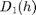
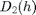
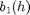
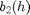
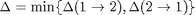
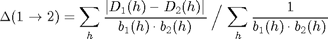

<!DOCTYPE html PUBLIC "-//W3C//DTD HTML 4.01 Transitional//EN">
<html>
  <head>
    <meta content="text/html; charset=utf-8" http-equiv="content-type">
    <!--
This HTML was auto-generated from MATLAB code.To make changes, update the MATLAB code and republish this document.
      -->
    <title>MUTUALSPECTRA - Measure the mutual closeness of singularity spectra.</title>
    <meta name="generator" content="MATLAB 7.14">
    <link rel="schema.DC" href="http://purl.org/dc/elements/1.1/">
    <meta name="DC.date" content="2012-05-31">
    <meta name="DC.source" content="mutualspectra.m">
    <style type="text/css">
html,body,div,span,applet,object,iframe,h1,h2,h3,h4,h5,h6,p,blockquote,pre,a,abbr,acronym,address,big,cite,code,del,dfn,em,font,img,ins,kbd,q,s,samp,small,strike,strong,sub,sup,tt,var,b,u,i,center,dl,dt,dd,ol,ul,li,fieldset,form,label,legend,table,caption,tbody,tfoot,thead,tr,th,td{margin:0;padding:0;border:0;outline:0;font-size:100%;vertical-align:baseline;background:transparent}body{line-height:1}ol,ul{list-style:none}blockquote,q{quotes:none}blockquote:before,blockquote:after,q:before,q:after{content:'';content:none}:focus{outine:0}ins{text-decoration:none}del{text-decoration:line-through}table{border-collapse:collapse;border-spacing:0}

html { min-height:100%; margin-bottom:1px; }
html body { height:100%; margin:0px; font-family:Arial, Helvetica, sans-serif; font-size:10px; color:#000; line-height:140%; background:#fff none; overflow-y:scroll; }
html body td { vertical-align:top; text-align:left; }

h1 { padding:0px; margin:0px 0px 25px; font-family:Arial, Helvetica, sans-serif; font-size:1.5em; color:#d55000; line-height:100%; font-weight:normal; }
h2 { padding:0px; margin:0px 0px 8px; font-family:Arial, Helvetica, sans-serif; font-size:1.2em; color:#000; font-weight:bold; line-height:140%; border-bottom:1px solid #d6d4d4; display:block; }
h3 { padding:0px; margin:0px 0px 5px; font-family:Arial, Helvetica, sans-serif; font-size:1.1em; color:#000; font-weight:bold; line-height:140%; }

a { color:#005fce; text-decoration:none; }
a:hover { color:#005fce; text-decoration:underline; }
a:visited { color:#004aa0; text-decoration:none; }

p { padding:0px; margin:0px 0px 20px; }
img { padding:0px; margin:0px 0px 20px; border:none; }
p img, pre img, tt img, li img { margin-bottom:0px; } 

ul { padding:0px; margin:0px 0px 20px 23px; list-style:square; }
ul li { padding:0px; margin:0px 0px 7px 0px; }
ul li ul { padding:5px 0px 0px; margin:0px 0px 7px 23px; }
ul li ol li { list-style:decimal; }
ol { padding:0px; margin:0px 0px 20px 0px; list-style:decimal; }
ol li { padding:0px; margin:0px 0px 7px 23px; list-style-type:decimal; }
ol li ol { padding:5px 0px 0px; margin:0px 0px 7px 0px; }
ol li ol li { list-style-type:lower-alpha; }
ol li ul { padding-top:7px; }
ol li ul li { list-style:square; }

.content { font-size:1.2em; line-height:140%; padding: 20px; }

pre, tt, code { font-size:12px; }
pre { margin:0px 0px 20px; }
pre.error { color:red; }
pre.codeinput { padding:10px; border:1px solid #d3d3d3; background:#f7f7f7; }
pre.codeoutput { padding:10px 11px; margin:0px 0px 20px; color:#4c4c4c; }

@media print { pre.codeinput, pre.codeoutput { word-wrap:break-word; width:100%; } }

span.keyword { color:#0000FF }
span.comment { color:#228B22 }
span.string { color:#A020F0 }
span.untermstring { color:#B20000 }
span.syscmd { color:#B28C00 }

.footer { width:auto; padding:10px 0px; margin:25px 0px 0px; border-top:1px dotted #878787; font-size:0.8em; line-height:140%; font-style:italic; color:#878787; text-align:left; float:none; }
.footer p { margin:0px; }

  </style>
  </head>
  <body>
    <div class="content">
      <h1>MUTUALSPECTRA - Measure the mutual closeness of singularity spectra.</h1>
      <!--introduction--><!--/introduction-->
      <h2>Contents</h2>
      <div>
        <ul>
          <li><a href="#1">Description</a></li>
          <li><a href="#2">Algorithm</a></li>
          <li><a href="#3">Syntax</a></li>
          <li><a href="#4">Inputs</a></li>
          <li><a href="#5">Output</a></li>
          <li><a href="#6">References</a></li>
          <li><a href="#8">See also</a></li>
          <li><a href="#9">Function implementation</a></li>
        </ul>
      </div>
      <h2>Description<a name="1"></a></h2>
      <p>Given two (possibly reduced) spectra (e.g. singularity spectra
        representing fractal dimensions), quantify the degree of mutual
        closeness following the approach of [PTP09].</p>
      <h2>Algorithm<a name="2"></a></h2>
      <p>The mutual closeness of the spectra 
        and  with
        associated uncertainties 
        and  is expressed
        by the Eq.(7) of [PTP09] as:</p>
      <p></p>
      <p>where:</p>
      <p></p>
      <p>and similarly for .</p>
      <h2>Syntax<a name="3"></a></h2>
      <pre>   delta = MUTUALSPECTRA(h1, D1, b1, h2, D2, b2);</pre>
      <h2>Inputs<a name="4"></a></h2>
      <p><b><tt>h1, D1</tt></b> : couple of estimation, ie. the spectrum <tt>D1</tt>
        of a (set of) signal(s) is estimated over a set of values <tt>h1</tt>.</p>
      <p><b><tt>b1</tt></b> : associated uncertainty in the estimation.</p>
      <p><b><tt>h2, D2, b2</tt></b> : ibid with an estimation performed over
        another (set of) signals.</p>
      <h2>Output<a name="5"></a></h2>
      <p><b><tt>delta</tt></b> : mutual closeness.</p>
      <h2>References<a name="6"></a></h2>
      <p>[TPG06] A. Turiel, C. Pérez-Vicente and J. Grazzini: "Numerical methods
        for the estimation of multifractal singularity spectra on sampled data:
        a comparative study", Journal of Computational Physics, 216(1):362?390,
        2006. <a href="http://www.sciencedirect.com/science/article/pii/S0021999105005565">http://www.sciencedirect.com/science/article/pii/S0021999105005565</a></p>
      <p>[PTP09] O. Pont, A. Turiel, C.J. Perez-Vicente: "Empirical evidences
        of a common multifractal signature in economic, biological and physical
        systems", Physica A, 388:3015-2035, 2009. <a href="http://www.sciencedirect.com/science/article/pii/S0378437109000880">http://www.sciencedirect.com/science/article/pii/S0378437109000880</a></p>
      <h2>See also<a name="8"></a></h2>
      <p>Ressembles: <a href="../../fractal/mftensor/html/fractalwave.html"><tt>FRACTALWAVE</tt></a>,
        <a href="../../fractal/mftensor/html/fractalwavestat.html"><tt>FRACTALWAVESTAT</tt></a>.
        Requires: <a href="matlab:webpub%28whichpath%28%27INTERP1%27%29%29"><tt>INTERP1</tt></a>,
        <a href="matlab:webpub%28whichpath%28%27SUM%27%29%29"><tt>SUM</tt></a>,
        <a href="matlab:webpub%28whichpath%28%27MIN%27%29%29"><tt>MIN</tt></a>.</p>
      <h2>Function implementation<a name="9"></a></h2>
      <pre class="codeinput"><span class="keyword">function</span> delta = mutualspectra(H1, DH1, ErrDH1, H2, DH2, ErrDH2)
</pre>
      <p>first, define the directed weighted average difference: compute
        delta(1-&gt;2)</p>
      <pre class="codeinput">DH = interp1(H2, DH2, H1, <span class="string">'linear'</span>);
ErrDH = interp1(H2, ErrDH2, H1, <span class="string">'linear'</span>);
delta1 = sum(abs(DH1 - DH)./(ErrDH1.*ErrDH)) / sum(ErrDH1.*ErrDH);
</pre>
      <p>compute delta(1-&gt;2)</p>
      <pre class="codeinput">DH = interp1(H1, DH1, H2, <span class="string">'linear'</span>);
ErrDH = interp1(H1, ErrDH1, H2, <span class="string">'linear'</span>);
delta = sum(abs(DH2 - DH)./(ErrDH2.*ErrDH)) / sum(ErrDH2.*ErrDH);
</pre>
      <p>define the weighted average difference between the two reduced spectra
        as the minimum of the two possible directed weighted average differences</p>
      <pre class="codeinput">delta = min(delta, delta1);
</pre>
      <pre class="codeinput"><span class="keyword">end</span> <span class="comment">% end of mutualspectra</span>
</pre></div>
    <!--
##### SOURCE BEGIN #####%% MUTUALSPECTRA - Measure the mutual closeness of singularity spectra. 
%%% Description
% Given two (possibly reduced) spectra (e.g. singularity spectra representing% fractal dimensions), quantify the degree of mutual closeness following the
% approach of [PTP09].% 
%% Algorithm% The mutual closeness of the spectra $D_1(h)$ and $D_2(h)$ with associated
% uncertainties $b_1(h)$ and $b_2(h)$ is expressed by the Eq.(7) of [PTP09]% as:
%% $$
%   \Delta = \min \{ \Delta(1\rightarrow 2), \Delta(2\rightarrow 1) \}   % $$
%% where:
%% $$  \Delta(1\rightarrow 2) = 
%          \sum_h \frac{|D_1(h) -D_2(h)|}{b_1(h)\cdot b_2(h)} \, \Big/ \,%          \sum_h \frac{1}{b_1(h)\cdot b_2(h)} 
% $$%
% and similarly for $\Delta(2\rightarrow 1)$.%
%% Syntax%     delta = MUTUALSPECTRA(h1, D1, b1, h2, D2, b2);
%%% Inputs
% *|h1, D1|* : couple of estimation, ie. the spectrum |D1| of a (set of) %     signal(s) is estimated over a set of values |h1|.
%% *|b1|* : associated uncertainty in the estimation.
%% *|h2, D2, b2|* : ibid with an estimation performed over another (set of)
%     signals.% 
%% Output% *|delta|* : mutual closeness.
%%% References
% [TPG06]  A. Turiel, C. Pérez-Vicente and J. Grazzini: "Numerical methods %      for the estimation of multifractal singularity spectra on sampled data:
%      a comparative study", Journal of Computational Physics, 216(1):362?390,%      2006.
%      <http://www.sciencedirect.com/science/article/pii/S0021999105005565>%
% [PTP09]  O. Pont, A. Turiel, C.J. Perez-Vicente: "Empirical evidences of%      a common multifractal signature in economic, biological and physical 
%      systems", Physica A, 388:3015-2035, 2009.%      <http://www.sciencedirect.com/science/article/pii/S0378437109000880>
%%% Credit
% <mailto:grazzja@lanl.gov J.Grazzini> (ISR-2/LANL)%
%% See also% Ressembles:
% <../../fractal/mftensor/html/fractalwave.html |FRACTALWAVE|>,% <../../fractal/mftensor/html/fractalwavestat.html |FRACTALWAVESTAT|>.
% Requires:% <matlab:webpub(whichpath('INTERP1')) |INTERP1|>,
% <matlab:webpub(whichpath('SUM')) |SUM|>,% <matlab:webpub(whichpath('MIN')) |MIN|>.
%% Function implementation
function delta = mutualspectra(H1, DH1, ErrDH1, H2, DH2, ErrDH2)
%%% first, define the directed weighted average difference:
% compute delta(1->2)  DH = interp1(H2, DH2, H1, 'linear');
ErrDH = interp1(H2, ErrDH2, H1, 'linear');delta1 = sum(abs(DH1 - DH)./(ErrDH1.*ErrDH)) / sum(ErrDH1.*ErrDH);
%%
% compute delta(1->2)  DH = interp1(H1, DH1, H2, 'linear');
ErrDH = interp1(H1, ErrDH1, H2, 'linear');delta = sum(abs(DH2 - DH)./(ErrDH2.*ErrDH)) / sum(ErrDH2.*ErrDH);
%%
% define the weighted average difference between the two reduced spectra as% the minimum of the two possible directed weighted average differences
delta = min(delta, delta1);
end % end of mutualspectra
##### SOURCE END #####-->
  </body>
</html>
